Contenu sous licence CC BY-NC-SA 4.0 — libre, non commercial
🧭 Sommaire de l'année
✅ Les 25 semaines sont rédigées. Le Coran accueille 5 nouvelles sourates (Ad-Duhâ, Ash-Sharh, At-Tîn, Al-Humazah, Al-Qadr — vérifiées non vues au Cycle 1 ni en Cycle 2 Année 1), chacune reliée à 3 idées essentielles de foi/spiritualité. Les 20 autres semaines se répartissent également entre Aqîda (5), Fiqh (5), Sîra (5) et Hadith & Adab (5). Chaque chapitre prévoit un emplacement image avec son prompt de génération.
✅ Vérifié via MCP tafsir (2026-07-23) : les 5 sourates de cette année (Ad-Duhâ, Ash-Sharh, At-Tîn, Al-Humazah, Al-Qadr) ont été confrontées verset par verset à la base de données tafsir — aucune erreur de texte.
Jamais de représentation d'Allah, d'un ange, ou d'un Prophète (visage, silhouette identifiable) — y compris le Prophète Muhammad ﷺ.
Pour les scènes de Sîra impliquant des Compagnons (Bilâl, les premiers convertis…), préférer une scène symbolique (lieu, objet, ambiance) plutôt qu'un portrait identifiable.
Nour, notre personnage d'enfant fictif (9-10 ans cette année), peut être illustrée normalement (style éducatif doux, non réaliste).
Style recommandé : illustration douce façon aquarelle/vectoriel simple, palette chaleureuse assortie au manuel (terracotta, or, vert sauge, bleu profond), sans texte intégré à l'image.
⭐ Mon Passeport des Sourates
5 nouvelles sourates au programme cette année, qui s'ajoutent aux 16 déjà mémorisées en Cycle 1 et en Cycle 2 - Année 1.
✅ Ad-Duhâ (93) — S1, Ton Seigneur ne t'a pas abandonné
✅ Ash-Sharh (94) — S6, le soulagement du cœur
✅ At-Tîn (95) — S11, la plus belle forme de création
✅ Al-Humazah (104) — S16, ne pas se moquer, ne pas médire
✅ Al-Qadr (97) — S21, la Nuit de la Destinée (clôture)
Wadduhâ. Wal-layli idhâ sajâ. Mâ wadda'aka rabbuka wa mâ qalâ. Wa lal-âkhiratu khayrun laka minal-ûlâ. Wa lasawfa yu'tîka rabbuka fatardâ. Alam yajidka yatîman fa-âwâ. Wa wajadaka dâllan fahadâ. Wa wajadaka 'â'ilan fa-aghnâ. Fa-ammal-yatîma falâ taqhar. Wa ammas-sâ'ila falâ tanhar. Wa ammâ bini'mati rabbika fahaddith.
« Par le Jour Montant ! Et par la nuit quand elle couvre tout ! Ton Seigneur ne t'a ni abandonné, ni détesté. La vie dernière t'est, certes, meilleure que la vie présente. Ton Seigneur t'accordera certes [Ses faveurs], et alors tu seras satisfait. Ne t'a-t-Il pas trouvé orphelin ? Alors Il t'a accueilli ! Ne t'a-t-Il pas trouvé égaré ? Alors Il t'a guidé. Ne t'a-t-Il pas trouvé pauvre ? Alors Il t'a enrichi. Quant à l'orphelin, donc, ne le maltraite pas. Quant au demandeur, ne le repousse pas. Et quant au bienfait de ton Seigneur, proclame-le. »
Sourate Ad-Duhâ (93), versets 1 à 11 — trad. M. Hamidullah
Cette sourate a été révélée à un moment où le Prophète ﷺ traversait une période difficile, sans nouvelle révélation pendant quelque temps. Allah lui rappelle alors, avec beaucoup de tendresse, qu'Il ne l'a jamais abandonné : Il a pris soin de lui depuis son enfance d'orphelin, L'a guidé, L'a enrichi de la meilleure des richesses — la foi.
Cette sourate nous enseigne que même dans les moments difficiles, Allah reste proche de nous. Et elle nous rappelle aussi un devoir concret : comme Allah a pris soin du Prophète ﷺ, nous devons prendre soin des orphelins et de ceux qui demandent de l'aide.
✦3 idées essentielles
1
Même dans les moments où je me sens seul ou triste, Allah ne m'abandonne jamais : Il est toujours proche de moi.
2
Allah prend soin de ceux qui sont fragiles (l'orphelin, le pauvre) — et Il me demande de faire pareil avec les personnes autour de moi.
3
Parler des bienfaits d'Allah autour de moi (« proclame le bienfait ») est un acte de gratitude simple que je peux faire chaque jour.
Semaine 2 · Aqîda🕌 Croyance
Ar-Razzâq — Allah qui pourvoit à mes besoinsالرَّزَّاق
◎Ce que je vais apprendre
Découvrir le Nom d'Allah Ar-Razzâq, le Pourvoyeur.
Comprendre que toute nourriture, tout bienfait vient d'Allah, même quand un humain me le donne.
Apprendre à faire confiance à Allah pour mes besoins (tawakkul simple).
✎L'histoire de Nour
Nour a 9 ans maintenant. Un soir, en mettant la table, elle demande à son père : « Papa, c'est toi qui achètes notre nourriture, donc c'est toi qui nous nourris, non ? » Son père sourit et pose sa fourchette. « C'est moi qui vais au magasin, oui. Mais qui a fait pousser le blé pour le pain ? Qui a fait grandir les fruits ? Qui m'a donné la force de travailler pour gagner l'argent qui les achète ? »
Nour réfléchit un instant. « C'est Allah... » « Exactement, dit son père. On appelle Allah Ar-Razzâq : Celui qui pourvoit à tous les besoins de Ses créatures. Moi, je ne suis qu'un moyen qu'Allah utilise pour te nourrir. »
« En vérité, c'est Allah qui est le Grand Pourvoyeur, Le Détenteur de la force, l'Inébranlable. »
Sourate Adh-Dhâriyât (51), verset 58 — trad. M. Hamidullah
💬Qu'est-ce que cela veut dire ?
Ar-Razzâq veut dire « Celui qui pourvoit sans jamais s'arrêter » : Il donne à chaque être vivant — humain, animal, plante — ce dont il a besoin pour vivre, souvent par des moyens que je ne remarque même pas (la pluie, le soleil, le travail de mes parents). Rien de tout cela n'arrive par hasard : c'est Allah qui organise tout, avec une force et une sagesse immenses.
Croire en Ar-Razzâq m'aide à rester serein(e) : même si je ne sais pas encore de quoi demain sera fait, je fais confiance à Allah pour subvenir à mes besoins — c'est le tawakkul, la confiance en Allah, qui n'empêche pas de travailler ou d'étudier sérieusement de mon côté.
✦Et toi ?
La prochaine fois que tu manges, prends une seconde avant la première bouchée pour te rappeler : « C'est Ar-Razzâq qui m'a donné cela », et dis « Al-hamdu lillâh » en fin de repas.
💡Le savais-tu ?
Une petite graine de blé plantée en terre peut donner un épi avec des dizaines de nouvelles graines. Personne n'a « fabriqué » cette multiplication : c'est un des innombrables signes d'Ar-Razzâq.
✏Je m'exerce
1. Que veut dire le Nom Ar-Razzâq ?
Réponse : Celui qui pourvoit sans cesse aux besoins de Ses créatures.
2. Quand mes parents m'achètent à manger, qui est le vrai pourvoyeur derrière ce geste ?
Réponse : Allah — mes parents ne sont qu'un moyen qu'Il utilise.
3. Que veut dire « tawakkul » ?
Réponse : Faire confiance à Allah pour mes besoins, tout en agissant sérieusement de mon côté.
★À retenir
« Allah, Ar-Razzâq, pourvoit à tous mes besoins : je Lui fais confiance et je Le remercie. »
✎Vocabulaire
Ar-Razzâq : le Pourvoyeur.الرَّزَّاق
Rizq : ce qu'Allah accorde comme subsistance.رِزْق
Tawakkul : la confiance placée en Allah.تَوَكُّل
Semaine 3 · Fiqh💧 La pratique
Suivre toute ma prière, du début à la finالصَّلَاة
◎Ce que je vais apprendre
Revoir l'enchaînement complet d'une prière (rak'a par rak'a).
Commencer à prier seul(e), du takbîr initial au taslîm final, sans qu'on me guide geste par geste.
Comprendre pourquoi on ne se précipite jamais dans la prière.
✎L'histoire de Nour
Cette année, la maîtresse de Nour lui propose un défi : « Tu connais déjà tous les gestes. Aujourd'hui, tu vas prier deux rak'a toute seule, sans que je te dise quoi faire à chaque étape. » Nour se sent un peu nerveuse, mais elle se lance : intention en silence, takbîr, Al-Fâtiha, une sourate courte, inclinaison, redressement, deux prosternations, position assise, deuxième rak'a... jusqu'au salut final à droite puis à gauche.
À la fin, sa maîtresse la félicite : « Tu es prête à prier seule maintenant, même quand personne ne te surveille. C'est ça, devenir responsable de sa prière. »
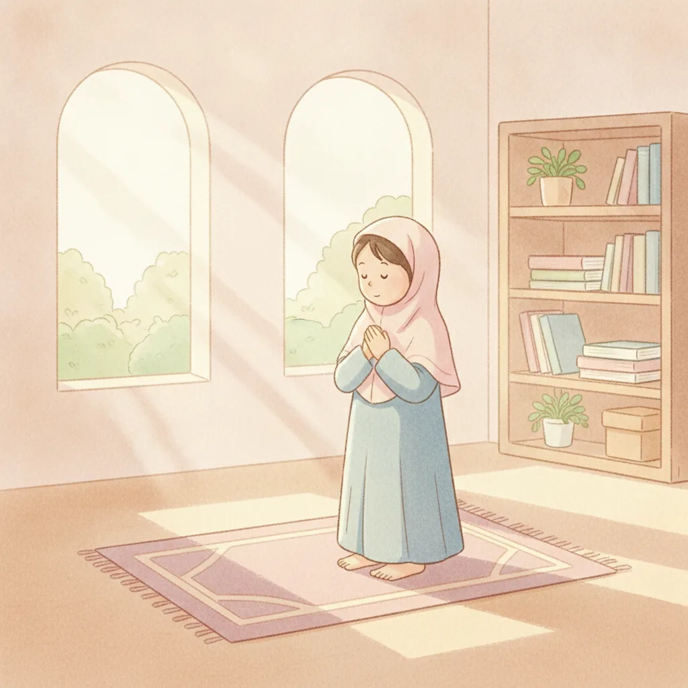
💬L'enchaînement complet d'une rak'a
D'après l'école malikite (Précis de Fiqh Malikite, C. Pabiot), voici l'ordre à suivre sans en sauter aucune étape :
1Niyya + Takbîratu-l-ihrâm : je forme l'intention en silence puis je dis « Allâhu akbar » debout, mains le long du corps.
2Récitation : Al-Fâtiha puis une sourate ou des versets courts.
3Rukû' : inclinaison du buste, dos droit, mains sur les genoux.
4Redressement : je me relève complètement avant de me prosterner.
5Sujûd (x2) : deux prosternations avec une position assise brève entre les deux.
6Fin de rak'a : je me relève pour la rak'a suivante, ou je m'assois pour le tashahhud si c'est la dernière.
✦Et toi ?
Cette semaine, essaie de prier au moins une prière du début à la fin sans que personne ne t'aide à te souvenir des gestes. Si tu hésites sur un geste, ce n'est pas grave : demande après la prière, pas pendant.
💡Le savais-tu ?
Le Prophète ﷺ a dit : « Priez comme vous m'avez vu prier. » (Rapporté par Al-Bukhârî) — c'est pour cela que l'ordre exact des gestes est important : il vient directement de son exemple.
✏Je m'exerce
1. Par quoi commence-t-on toujours une prière ?
Réponse : Par l'intention silencieuse (niyya) puis le takbîratu-l-ihrâm.
2. Combien de prosternations y a-t-il dans une seule rak'a ?
Réponse : Deux prosternations.
3. Pourquoi essaie-t-on de prier sans se faire aider geste par geste, à mon âge ?
Réponse : Pour devenir responsable de sa propre prière, même quand personne ne surveille.
★À retenir
« Je connais maintenant tous les gestes de ma prière : c'est à moi de les accomplir avec calme, du début à la fin. »
Semaine 4 · Sîra🕋 Vie du Prophète ﷺ
Les premiers convertis et la maison d'al-Arqamدَارُ الْأَرْقَم
◎Ce que je vais apprendre
Découvrir qui furent les tout premiers musulmans après la révélation.
Comprendre pourquoi les premières années de prédication sont restées discrètes.
Situer la maison d'al-Arqam comme premier lieu de rassemblement des croyants.
✎L'histoire de Nour
« Maîtresse, quand le Prophète ﷺ a reçu la première révélation, est-ce que tout le monde est devenu musulman tout de suite ? » demande Nour. « Non, répond la maîtresse. Pendant les trois premières années, le Prophète ﷺ a invité les gens à l'islam discrètement, en privé, un peu à la fois. »
« Les tout premiers à croire ont été sa femme Khadîja, son cousin 'Alî (encore enfant), son fidèle ami Abû Bakr, et son serviteur Zayd. Puis, petit à petit, d'autres personnes ont cru, souvent grâce à Abû Bakr qui parlait avec beaucoup de sagesse. Les nouveaux musulmans se retrouvaient en secret dans la maison d'un jeune compagnon nommé al-Arqam, près de la Mecque, pour apprendre le Coran et prier ensemble sans être vus. »
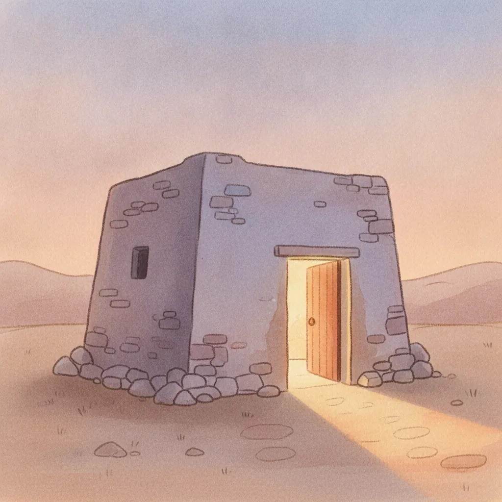
💬Pourquoi une prédication discrète ?
À cette époque, la société de La Mecque était fermement attachée à l'adoration de nombreuses idoles. Annoncer publiquement un message qui remettait cela en question dès le début aurait été extrêmement dangereux. Le Prophète ﷺ a donc choisi la prudence : parler d'abord aux personnes de confiance, une à une, pour construire un petit groupe solide avant toute annonce publique.
Cette période nous enseigne une chose importante : la patience et la prudence ne sont pas de la faiblesse. Parfois, bâtir quelque chose de solide demande du temps et de la discrétion.
✦Et toi ?
Comme les premiers compagnons se retrouvaient pour apprendre ensemble, essaie cette semaine de réviser une sourate avec un frère, une sœur ou un ami, en s'entraidant plutôt que seul(e).
✏Je m'exerce
1. Cite deux des tout premiers musulmans.
Réponse : Par exemple Khadîja et Abû Bakr (ou 'Alî, ou Zayd).
2. Comment s'appelait la maison où se retrouvaient les premiers musulmans ?
Réponse : La maison d'al-Arqam.
3. Pourquoi la prédication a-t-elle d'abord été discrète ?
Réponse : Parce que le message était dangereux à annoncer publiquement dans une société attachée à l'adoration des idoles.
★À retenir
« Les premiers musulmans se sont soutenus les uns les autres avec patience : je peux m'inspirer de leur entraide. »
Semaine 5 · Hadith & Adab🤝 Bon comportement
Se réconcilier avec un camaradeالصُّلْح
◎Ce que je vais apprendre
Comprendre qu'un désaccord entre camarades ne doit jamais durer trop longtemps.
Apprendre des mots simples pour aller vers l'autre et se réconcilier.
Découvrir un hadith sur la réconciliation entre musulmans.
✎L'histoire de Nour
Nour s'est disputée avec sa camarade Salma pour une histoire de jeu à la récréation. Depuis deux jours, elles ne se parlent plus, et Nour se sent triste chaque fois qu'elle croise Salma dans la cour sans lui dire bonjour. Le soir, elle en parle à sa mère.
« Tu sais, lui dit sa mère, le Prophète ﷺ nous a appris qu'il n'est pas permis à un musulman de rester fâché avec son frère ou sa sœur plus de trois jours. Le meilleur, c'est celui qui va vers l'autre en premier pour dire salâm. » Le lendemain, Nour prend son courage à deux mains et va dire bonjour à Salma la première. Un sourire suffit à tout arranger.
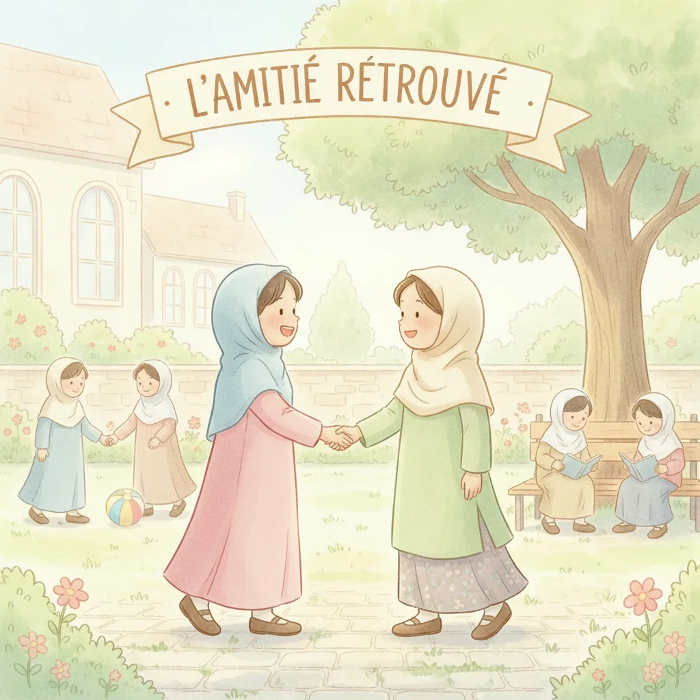
❝Un hadith à retenir
« Il n'est pas permis à un musulman de rester en froid avec son frère plus de trois jours ; le jour où ils se rencontrent, l'un se détourne et l'autre se détourne. Le meilleur des deux est celui qui devance l'autre en le saluant en premier. »
Rapporté par Al-Bukhârî et Muslim.
💬Qu'est-ce que cela veut dire ?
Ce hadith nous apprend qu'un désaccord n'est pas grave en soi — c'est humain de se disputer parfois. Mais rester fâché longtemps abîme le cœur et l'amitié. Le Prophète ﷺ nous encourage à ne pas laisser un conflit s'installer : dire salâm en premier, même si on pense avoir raison, n'est pas une faiblesse — c'est une force et une générosité.
✦Et toi ?
Si tu es actuellement fâché(e) avec quelqu'un, choisis d'être celui ou celle qui dit salâm en premier cette semaine, sans attendre que l'autre le fasse.
✏Je m'exerce
1. Combien de temps maximum peut-on rester fâché avec un frère ou une sœur en islam, d'après ce hadith ?
Réponse : Trois jours.
2. Qui est « le meilleur des deux » selon le hadith ?
Réponse : Celui qui salue l'autre en premier.
★À retenir
« Je n'attends pas que l'autre fasse le premier pas : dire salâm en premier est une force, pas une faiblesse. »
Alam nashrah laka sadrak. Wa wada'nâ 'anka wizrak. Alladhî anqada zahrak. Wa rafa'nâ laka dhikrak. Fa-inna ma'al-'usri yusrâ. Innâ ma'al-'usri yusrâ. Fa-idhâ faraghta fansab. Wa ilâ rabbika farghab.
« N'avons-Nous pas ouvert pour toi ta poitrine ? Et ne t'avons-Nous pas déchargé du fardeau qui accablait ton dos ? Et exalté pour toi ta renommée ? A côté de la difficulté est, certes, une facilité ! A côté de la difficulté, est certes, une facilité ! Quand tu te libères, donc, lève-toi, et à ton Seigneur aspire. »
Sourate Ash-Sharh (94), versets 1 à 8 — trad. M. Hamidullah
Cette sourate a été révélée juste après Ad-Duhâ, comme une suite : Allah rappelle au Prophète ﷺ qu'Il a « ouvert sa poitrine », c'est-à-dire rempli son cœur de foi, de paix et de force pour porter son message. La phrase « à côté de la difficulté est une facilité » est répétée deux fois : c'est une promesse forte qu'Allah fait à chacun de nous.
Cette sourate nous apprend que la difficulté n'est jamais la fin de l'histoire : elle est toujours accompagnée, tout près, d'une facilité qui arrive.
✦3 idées essentielles
1
Après chaque difficulté vient une facilité — Allah le répète deux fois pour que je m'en souvienne toujours.
2
Quand une tâche difficile est terminée, on ne se repose pas totalement : on se tourne vers une nouvelle bonne action, en particulier vers Allah.
3
Allah peut « ouvrir mon cœur » face à une difficulté : Le solliciter par la du'â' m'aide à traverser les moments durs.
Semaine 7 · Aqîda🕌 Croyance
Al-Ghafûr — Allah qui pardonne toujoursالْغَفُور
◎Ce que je vais apprendre
Découvrir le Nom d'Allah Al-Ghafûr, le Grand Pardonneur.
Comprendre qu'Allah aime pardonner à celui qui revient vers Lui sincèrement.
Apprendre à ne jamais désespérer après une erreur.
✎L'histoire de Nour
Nour a cassé le vase préféré de sa mère en jouant au ballon dans le salon, alors qu'elle savait que c'était interdit. Elle a tellement peur d'être grondée qu'elle envisage un instant de mentir. Mais elle se souvient d'une leçon de la maîtresse et va voir sa mère pour tout avouer, la gorge serrée.
Sa mère, surprise mais touchée par sa sincérité, la prend dans ses bras : « Je suis en colère pour le vase, mais je suis fière que tu me dises la vérité. Sais-tu qu'Allah aime encore plus que moi pardonner à ceux qui reviennent vers Lui sincèrement après une erreur ? Il s'appelle Al-Ghafûr, le Grand Pardonneur. »
Wa innî laghaffârun liman tâba wa âmana wa 'amila sâlihan thummahtadâ.
« Et Je suis certes Celui qui pardonne à quiconque se repent, croit et fait bonne œuvre, et suit alors le droit chemin. »
Sourate Tâ-Hâ (20), extrait du verset 82 — trad. M. Hamidullah
💬Qu'est-ce que cela veut dire ?
Al-Ghafûr veut dire « Celui qui pardonne énormément, sans jamais se lasser ». Contrairement à un humain qui peut finir par se fatiguer de pardonner, Allah accepte toujours le repentir sincère (tawba) : reconnaître son erreur, la regretter vraiment, et essayer de ne pas la refaire.
Cela ne veut pas dire qu'on peut mal agir sans conséquence : dire la vérité à sa mère, par exemple, n'annule pas forcément la punition pour le vase cassé. Mais cela veut dire qu'on n'a jamais à désespérer d'Allah, même après une grosse erreur.
✦Et toi ?
Pense à une erreur récente que tu regrettes. Dis « Astaghfirullah » (je demande pardon à Allah) trois fois, et si cela concerne quelqu'un, va aussi t'excuser auprès de cette personne.
💡Le savais-tu ?
Le Prophète ﷺ demandait pardon à Allah plus de 70 fois par jour, alors qu'il était protégé de la faute grave : c'est un exemple pour nous montrer combien il est bon de demander pardon souvent.
✏Je m'exerce
1. Que veut dire Al-Ghafûr ?
Réponse : Le Grand Pardonneur, Celui qui pardonne sans se lasser.
2. Que veut dire « tawba » ?
Réponse : Le repentir sincère : regretter son erreur et essayer de ne pas la refaire.
3. Que dit-on en arabe pour demander pardon à Allah ?
Réponse : « Astaghfirullah ».
★À retenir
« Après une erreur, je ne désespère jamais : Al-Ghafûr aime pardonner à qui revient vers Lui sincèrement. »
✎Vocabulaire
Al-Ghafûr : le Grand Pardonneur.الْغَفُور
Tawba : le repentir sincère.تَوْبَة
Istighfâr : le fait de demander pardon.اِسْتِغْفَار
Semaine 8 · Fiqh💧 La pratique
Halal et harâm dans ma vie de tous les joursحَلَال وَحَرَام
◎Ce que je vais apprendre
Comprendre simplement ce que veulent dire « halal » et « harâm ».
Découvrir des exemples concrets adaptés à mon âge : nourriture, paroles, comportements.
Apprendre à me poser la bonne question avant d'agir.
✎L'histoire de Nour
À la cantine, un camarade propose à Nour un bonbon dont elle n'est pas sûre de la composition. « Il y a peut-être de la gélatine dedans, dit-elle, je ne sais pas si c'est halal. » Son camarade hausse les épaules : « C'est qu'un bonbon, ça ne va rien changer ! » Nour hésite, puis décide de ne pas le manger, par prudence.
Le soir, elle raconte cela à son grand-père. « Tu as bien fait, dit-il. Le halal, c'est ce qu'Allah autorise ; le harâm, c'est ce qu'Il interdit. Entre les deux, il y a aussi des choses douteuses (shubuhât) : dans le doute, on préfère être prudent. »
Yâ ayyuha-lladhîna âmanû kulû min tayyibâti mâ razaqnâkum.
« Ô les croyants ! Mangez des (nourritures) délicieuses que Nous vous avons attribuées. »
Sourate Al-Baqara (2), extrait du verset 172 — trad. M. Hamidullah
💬Quelques repères simples
Halal veut dire « permis, autorisé » et harâm veut dire « interdit ». Cela concerne la nourriture (viande abattue selon les règles, pas d'alcool ni de porc), mais aussi les paroles (mentir, médire) et les comportements (voler, frapper sans raison). Le halal n'est pas qu'une question de nourriture : c'est une manière de vivre honnêtement en toute chose.
Entre le clairement permis et le clairement interdit, il existe aussi des zones douteuses (shubuhât). Le Prophète ﷺ nous a enseigné que celui qui évite le doute protège mieux sa religion.
✦Et toi ?
La prochaine fois que tu hésites face à quelque chose (un aliment, une parole, une action), pose-toi la question : « Est-ce que je serais fier(e) qu'Allah me voie faire ça ? » Cela t'aidera à choisir.
✏Je m'exerce
1. Que veut dire « halal » ?
Réponse : Permis, autorisé par Allah.
2. Cite un exemple de harâm qui n'est pas lié à la nourriture.
Réponse : Par exemple mentir, voler, ou médire.
3. Que fait-on face à une chose douteuse (shubuha) ?
Réponse : On est prudent : par précaution, on évite plutôt que de prendre le risque.
★À retenir
« Le halal et le harâm ne concernent pas que la nourriture : c'est une façon honnête de vivre chaque jour. »
Semaine 9 · Sîra🕋 Vie du Prophète ﷺ
La prédication publique et le début du rejetالدَّعْوَةُ الْجَهْرِيَّة
◎Ce que je vais apprendre
Comprendre pourquoi le Prophète ﷺ a fini par annoncer son message publiquement.
Découvrir la réaction des chefs de La Mecque.
Apprendre que dire la vérité peut parfois déplaire, sans que cela signifie qu'on a tort.
✎L'histoire de Nour
« Après trois ans de prédication discrète, raconte la maîtresse de Nour, Allah a ordonné au Prophète ﷺ d'annoncer son message ouvertement. Il est monté sur la colline de Safâ, près de la Ka'ba, et a appelé les gens de sa tribu à venir l'écouter. »
« Il leur a demandé : "Si je vous disais qu'une armée ennemie arrive derrière cette colline, me croiriez-vous ?" Tous ont répondu oui, car il était connu pour ne jamais mentir. Alors il a dit : "Je vous avertis d'un châtiment sévère si vous continuez à adorer des idoles au lieu du seul vrai Dieu." » « Et qu'ont-ils fait ? » demande Nour, inquiète. « Beaucoup ont été très en colère, dit la maîtresse. C'est là qu'a commencé une période plus difficile. »
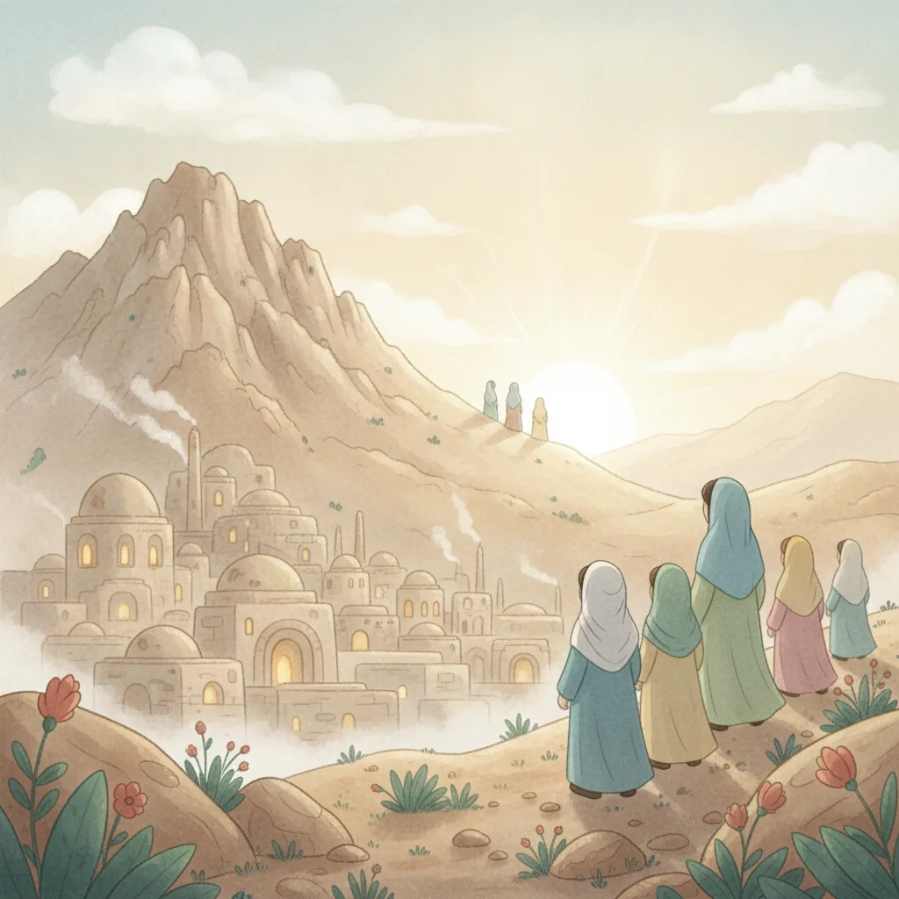
💬Qu'est-ce que cela nous enseigne ?
Cet épisode nous montre que dire une vérité importante peut déplaire, même quand on est quelqu'un d'honnête et respecté. La réputation du Prophète ﷺ était irréprochable — même ses adversaires reconnaissaient son honnêteté — et pourtant, son message a provoqué du rejet, car il demandait un changement profond que beaucoup ne voulaient pas accepter.
Cela nous apprend que dire la vérité reste juste, même quand cela ne plaît pas à tout le monde autour de nous.
✦Et toi ?
As-tu déjà dû dire une vérité qui n'a pas plu (par exemple avouer une bêtise, ou dire à un camarade que son comportement n'était pas correct) ? Rappelle-toi que dire vrai reste juste, même si cela déplaît sur le moment.
✏Je m'exerce
1. Sur quelle colline le Prophète ﷺ a-t-il annoncé son message publiquement ?
Réponse : La colline de Safâ.
2. Pourquoi les gens faisaient-ils confiance à sa parole au départ ?
Réponse : Parce qu'il était connu pour ne jamais mentir.
3. Comment ont réagi beaucoup de personnes à son message ?
Réponse : Avec colère et rejet.
★À retenir
« Dire la vérité reste juste, même quand cela ne plaît pas à tout le monde. »
Semaine 10 · Hadith & Adab🤝 Bon comportement
L'amitié sincèreالصَّدَاقَة
◎Ce que je vais apprendre
Comprendre qu'on ressemble un peu à ses amis proches.
Apprendre à choisir des amis qui m'aident à devenir meilleur(e).
Découvrir un hadith sur l'influence des fréquentations.
✎L'histoire de Nour
Nour hésite entre deux groupes d'amies à l'école : l'un qui aime bien se moquer des autres en cachette, l'autre qui préfère jouer calmement et s'entraider. Elle en parle à sa grande sœur. « Est-ce si important de choisir ? » demande Nour. « Beaucoup plus que tu ne le penses, répond sa sœur. Le Prophète ﷺ a comparé un bon ami à quelqu'un qui vend du parfum : même si tu n'en achètes pas, tu repars avec une bonne odeur. Et un mauvais ami, à quelqu'un qui souffle sur les braises d'un feu : même sans te brûler, tu respires la fumée. »
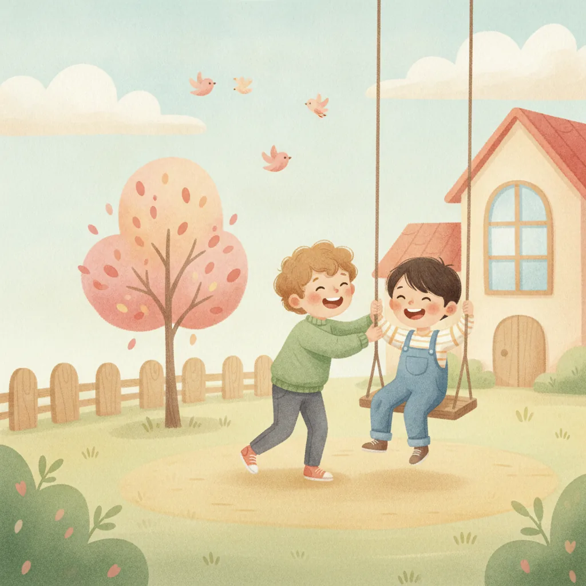
❝Un hadith à retenir
« L'exemple du bon compagnon et du mauvais compagnon est celui du porteur de musc et du souffleur de forge : le porteur de musc, ou bien il t'en offre, ou bien tu lui en achètes, ou bien tu en sens la bonne odeur ; quant au souffleur de forge, ou bien il brûle tes vêtements, ou bien tu sens une odeur désagréable. »
Rapporté par Al-Bukhârî et Muslim.
💬Qu'est-ce que cela veut dire ?
Ce hadith nous apprend que nos amis nous influencent, même sans qu'on s'en rende compte. Passer du temps avec quelqu'un de bien nous « imprègne » un peu de ses bonnes qualités ; passer du temps avec quelqu'un qui agit mal peut, petit à petit, nous entraîner à faire pareil, même si on ne le voulait pas au départ.
Cela ne veut pas dire qu'il faut rejeter quelqu'un — on peut rester poli avec tout le monde — mais choisir ses amis les plus proches avec attention est important.
✦Et toi ?
Pense à un ami ou une amie qui t'aide à devenir meilleur(e). Dis-lui merci cette semaine, ou fais-lui un compliment sincère.
✏Je m'exerce
1. À quoi le Prophète ﷺ compare-t-il un bon ami ?
Réponse : À un porteur de musc (parfum).
2. À quoi compare-t-il un mauvais ami ?
Réponse : À un souffleur de forge.
★À retenir
« Je choisis mes amis proches avec attention : ils m'influencent, même sans que je m'en rende compte. »
Wat-tîni waz-zaytûn. Wa tûri sînîn. Wa hâdhal-baladil-amîn. Laqad khalaqnal-insâna fî ahsani taqwîm. Thumma radadnâhu asfala sâfilîn. Illal-ladhîna âmanû wa 'amilus-sâlihâti falahum ajrun ghayru mamnûn. Famâ yukadhdhibuka ba'du bid-dîn. Alaysallâhu bi-ahkamil-hâkimîn.
« Par le figuier et l'olivier. Et par le Mont Sînîn. Et par cette Cité sûre. Nous avons certes créé l'homme dans la forme la plus parfaite. Ensuite, Nous l'avons ramené au niveau le plus bas, sauf ceux qui croient et accomplissent les bonnes œuvres : ceux-là auront une récompense jamais interrompue. Après cela, qu'est-ce qui te fait traiter la rétribution de mensonge ? Allah n'est-Il pas le plus sage des Juges ? »
Sourate At-Tîn (95), versets 1 à 8 — trad. M. Hamidullah
Allah jure par plusieurs lieux importants (le figuier et l'olivier rappellent le pays du Prophète 'Îsâ, le Mont Sinaï rappelle le Prophète Mûsâ, La Mecque rappelle le Prophète Muhammad ﷺ) pour introduire une vérité magnifique : Allah a créé l'être humain « dans la forme la plus parfaite » — un corps équilibré, une intelligence, un cœur capable de croire.
Mais cette perfection peut être « perdue » si la personne choisit le mal et s'éloigne de la foi. Ceux qui croient et font de bonnes actions, eux, gardent une récompense qui ne s'arrête jamais.
✦3 idées essentielles
1
Allah m'a créé(e) dans la forme la plus parfaite : mon corps, mon intelligence et mon cœur sont un cadeau précieux à respecter.
2
Cette belle création peut être « abîmée » si je choisis le mal : c'est pour cela que mes choix comptent chaque jour.
3
La foi et les bonnes actions gardent intacte la récompense qu'Allah promet — une récompense qui ne s'arrête jamais.
Semaine 12 · Aqîda🕌 Croyance
Allah seul mérite d'être adoréاَلْأُلُوهِيَّة
◎Ce que je vais apprendre
Comprendre le sens simple du mot « Tawhîd ».
Découvrir qu'adorer, c'est plus que prier : c'est aimer, obéir et espérer en premier lieu Allah.
Comprendre pourquoi on ne prie ni ne demande d'aide à autre chose qu'Allah.
✎L'histoire de Nour
En sortant de l'école, Nour voit une camarade toucher une pierre porte-bonheur avant un examen « pour avoir de la chance ». Le soir, elle demande à son père : « Est-ce que ça marche vraiment, les pierres porte-bonheur ? » Son père s'assoit avec elle. « Aucune pierre, aucun objet ne peut apporter la chance ou le malheur par lui-même : seul Allah décide de ce qui nous arrive. On appelle cela le Tawhîd : croire qu'Allah seul mérite d'être adoré, et Lui seul qu'on doit demander de l'aide vraiment. »
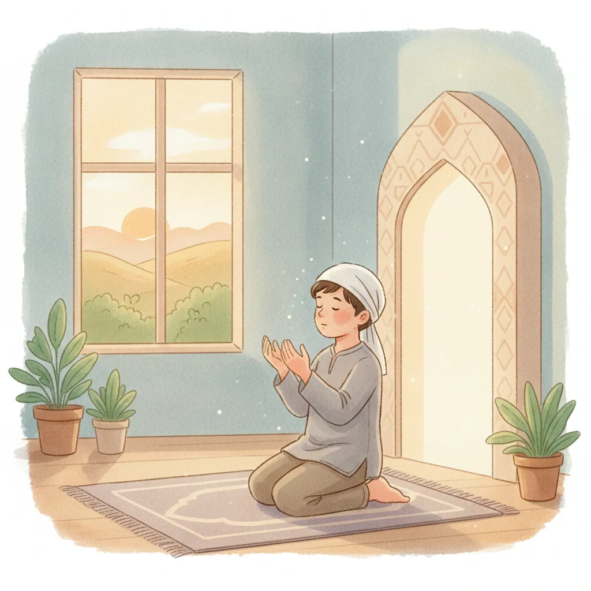
❝Ce que dit le Coran
إِيَّاكَ نَعْبُدُ وَإِيَّاكَ نَسْتَعِينُ
Iyyâka na'budu wa iyyâka nasta'în.
« C'est Toi [Seul] que nous adorons, et c'est Toi [Seul] dont nous implorons secours. »
Sourate Al-Fâtiha (1), verset 5 — trad. M. Hamidullah
💬Qu'est-ce que cela veut dire ?
On appelle cette croyance l'Ulûhiyya : Allah seul mérite qu'on L'adore, c'est-à-dire qu'on Lui prie, qu'on L'aime plus que tout, qu'on Lui obéisse et qu'on Lui demande vraiment de l'aide dans les moments difficiles. On ne demande pas d'aide « en vrai » à une pierre, une statue, ou toute autre chose créée — cela s'appelle le shirk, associer quelque chose à Allah, et c'est la plus grande erreur en islam.
Ce verset, récité dans chaque rak'a de la prière, nous rappelle cette vérité au moins 17 fois par jour !
✦Et toi ?
La prochaine fois que tu récites Al-Fâtiha en priant, essaie de ralentir sur « Iyyâka na'budu wa iyyâka nasta'în » et de vraiment y penser.
✏Je m'exerce
1. Que veut dire « Tawhîd » ?
Réponse : Croire qu'Allah seul mérite d'être adoré.
2. Que veut dire « shirk » ?
Réponse : Associer autre chose à Allah dans l'adoration.
3. Combien de fois par jour récite-t-on ce verset dans la prière obligatoire ?
Réponse : Au moins 17 fois (une fois par rak'a des 5 prières).
★À retenir
« C'est Toi seul que j'adore, et c'est Toi seul dont j'implore secours. »
✎Vocabulaire
Tawhîd : croire en l'unicité d'Allah.تَوْحِيد
Ulûhiyya : Allah seul mérite l'adoration.أُلُوهِيَّة
Shirk : associer autre chose à Allah.شِرْك
Semaine 13 · Fiqh💧 La pratique
Découvrir le jeûne du Ramadanالصِّيَام
◎Ce que je vais apprendre
Comprendre ce qu'est le jeûne (sawm) et pourquoi on le pratique.
Découvrir à partir de quel âge le jeûne devient obligatoire, et comment s'entraîner avant.
Comprendre le sens spirituel du jeûne, pas seulement la faim.
✎L'histoire de Nour
Nour a 9 ans, et cette année elle veut essayer de jeûner quelques journées entières pendant le Ramadan, en plus des demi-journées qu'elle faisait avant. Le premier jour, vers 15h, son ventre gargouille fort. Elle va voir sa grand-mère. « J'ai tellement faim, dit-elle, est-ce que je peux juste boire un peu d'eau ? »
Sa grand-mère lui sourit avec douceur : « Je sais que c'est dur. Mais rappelle-toi : le jeûne, ce n'est pas juste ne rien manger. C'est apprendre la patience, ressentir ce que vivent les personnes qui ont faim toute l'année, et se rapprocher d'Allah. Tiens encore un peu, et je te promets que la sensation à la rupture du jeûne sera magnifique. » Nour tient bon jusqu'au maghrib, et ressent une joie qu'elle n'oubliera jamais.
« Ô les croyants ! On vous a prescrit le jeûne comme on l'a prescrit à ceux d'avant vous, ainsi atteindrez-vous la piété. »
Sourate Al-Baqara (2), verset 183 — trad. M. Hamidullah
💬Quelques repères simples
Le jeûne devient obligatoire à partir de la puberté, mais de nombreuses familles encouragent les enfants à s'entraîner avant, progressivement et sans forcer, selon leur santé et leur âge. Le jeûne, ce n'est pas seulement s'abstenir de manger et de boire du lever au coucher du soleil : c'est aussi surveiller ses paroles (pas de mensonge, pas de dispute) et ses actions.
D'après le Précis de Fiqh Malikite (Corentin Pabiot), l'entraînement progressif de l'enfant au jeûne est encouragé par les savants malikites, avec bienveillance et sans excès.
✦Et toi ?
Si tu jeûnes déjà quelques heures ou journées, essaie cette semaine, avec l'accord de tes parents, d'ajouter une petite étape supplémentaire (une demi-journée de plus, ou une journée entière).
✏Je m'exerce
1. À partir de quand le jeûne devient-il obligatoire ?
Réponse : À partir de la puberté.
2. Le jeûne, est-ce seulement ne pas manger ?
Réponse : Non, c'est aussi surveiller ses paroles et ses actions.
★À retenir
« Le jeûne m'apprend la patience et me rapproche d'Allah : je m'y entraîne petit à petit. »
Semaine 14 · Sîra🕋 Vie du Prophète ﷺ
Bilâl et la persécution des premiers musulmansبِلَال
◎Ce que je vais apprendre
Découvrir l'histoire de Bilâl ibn Rabâh et sa persévérance.
Comprendre ce qu'ont enduré les premiers musulmans les plus fragiles.
Apprendre à tenir bon dans ses convictions, même face à la difficulté.
✎L'histoire de Nour
« Parmi les premiers musulmans, raconte la maîtresse, il y avait un homme nommé Bilâl, qui était esclave à La Mecque. Quand son maître a découvert qu'il croyait en Allah, il l'a fait torturer sous le soleil brûlant, une lourde pierre posée sur sa poitrine, pour le forcer à renier sa foi. »
« Et qu'a fait Bilâl ? » demande Nour, bouleversée. « Il répétait sans arrêter un seul mot : "Ahad, Ahad" — "Un seul, Un seul", pour dire qu'Allah est unique, quoi qu'il lui arrive. Il n'a jamais cédé. Finalement, Abû Bakr, touché par son courage, a payé pour l'acheter et le libérer. Bilâl est ensuite devenu le tout premier muezzin de l'islam, celui qui appelle à la prière. »
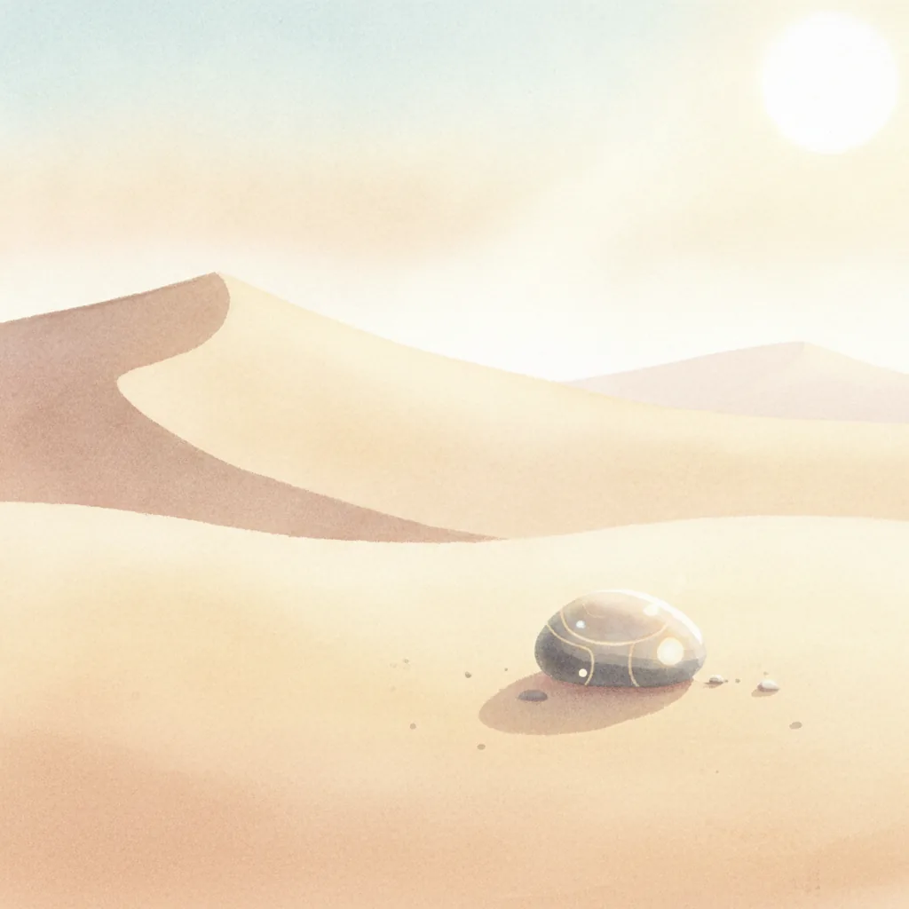
💬Qu'est-ce que cela nous enseigne ?
L'histoire de Bilâl nous montre une force intérieure extraordinaire : même soumis à une douleur terrible, il n'a jamais renié sa foi. Elle nous montre aussi la solidarité : Abû Bakr, en le libérant, a mis en pratique l'entraide entre croyants. Beaucoup d'autres premiers musulmans — femmes, hommes, esclaves ou personnes pauvres — ont subi des persécutions similaires pour leur foi.
Ce n'est pas parce qu'une situation est difficile qu'il faut abandonner ce en quoi on croit fermement, surtout quand c'est juste et vrai.
✦Et toi ?
Y a-t-il une situation où tu dois « tenir bon », comme dire non à une pression du groupe pour faire quelque chose de mal ? Pense à la force de Bilâl la prochaine fois que cela arrive.
✏Je m'exerce
1. Que répétait Bilâl pendant sa torture ?
Réponse : « Ahad, Ahad » (Un seul, Un seul).
2. Qui a libéré Bilâl ?
Réponse : Abû Bakr, en l'achetant à son maître.
3. Que devient Bilâl après sa libération ?
Réponse : Le tout premier muezzin de l'islam.
★À retenir
« Comme Bilâl, je tiens bon dans ce qui est juste, même quand c'est difficile. »
Semaine 15 · Hadith & Adab🤝 Bon comportement
Mes premiers repères sur les écransاَلشَّاشَات
◎Ce que je vais apprendre
Comprendre que le temps est un bienfait précieux dont Allah me demandera compte.
Découvrir des repères simples pour un usage raisonnable des écrans.
Apprendre à préférer parfois une activité utile à un temps d'écran trop long.
✎L'histoire de Nour
Un samedi, Nour passe presque toute la matinée devant une tablette à regarder des vidéos, une après l'autre, sans vraiment s'en rendre compte. Quand sa mère l'appelle pour l'aider à préparer le déjeuner, elle réalise avec surprise que trois heures sont passées « sans rien faire ».
« Le temps est un cadeau d'Allah, lui dit sa mère avec douceur, pas grondeuse. Ce n'est pas interdit de regarder des vidéos, mais il faut choisir combien de temps on y consacre, comme on choisit ce qu'on mange. » Ensemble, elles décident d'une petite règle : un temps d'écran limité, suivi toujours d'une activité différente (jeu dehors, lecture, aide à la maison).
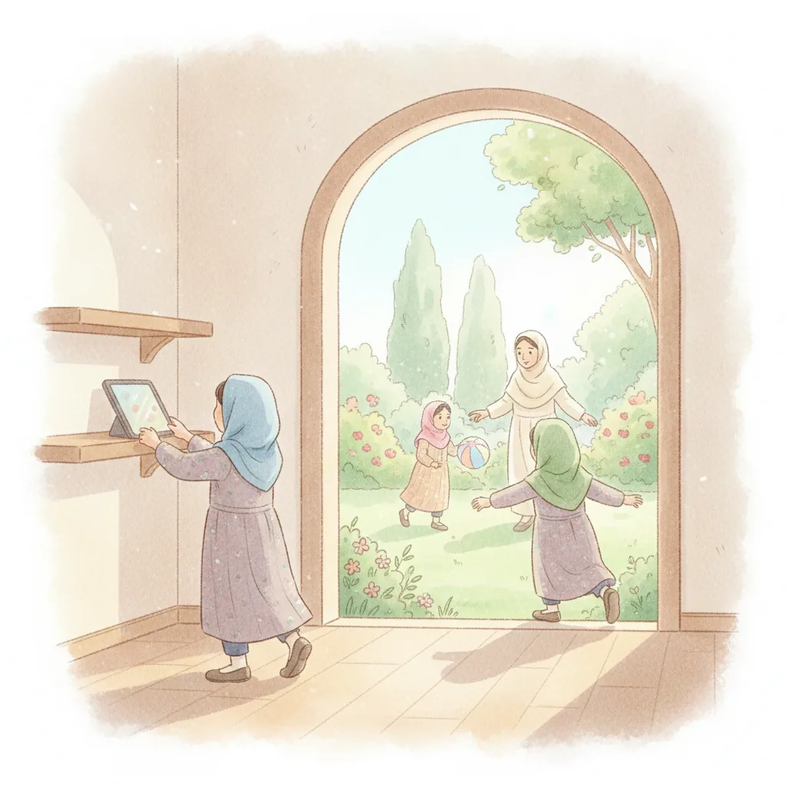
❝Un hadith à retenir
« Il y a deux bienfaits dont beaucoup de gens sont perdants : la santé et le temps libre. »
Rapporté par Al-Bukhârî.
💬Qu'est-ce que cela veut dire ?
Ce hadith nous rappelle que le temps libre est un bienfait immense — et qu'il file souvent sans qu'on s'en rende compte, surtout devant un écran. Ce n'est pas un péché de se détendre ou de regarder une vidéo, mais Allah nous demandera un jour comment nous avons utilisé notre temps sur Terre.
Un bon repère simple : après un temps d'écran, se demander « Qu'ai-je appris ou fait de bien pendant ce temps ? » Si la réponse est « rien du tout », c'est peut-être le signal qu'il est temps de faire autre chose.
✦Et toi ?
Cette semaine, essaie de fixer toi-même une limite de temps d'écran avant de commencer, et respecte-la — même sans qu'un adulte te le rappelle.
✏Je m'exerce
1. Quels sont les deux bienfaits cités dans le hadith ?
Réponse : La santé et le temps libre.
2. Pourquoi est-il utile de fixer une limite de temps d'écran avant de commencer ?
Réponse : Parce que le temps passe vite sans qu'on s'en rende compte, et qu'Allah nous demandera compte de notre temps.
★À retenir
« Mon temps est un bienfait précieux : je choisis comment je le passe, je ne le laisse pas juste filer. »
Waylul-likulli humazatil-lumazah. Alladhî jama'a mâlan wa 'addadah. Yahsabu anna mâlahû akhladah. Kallâ layunbadhanna fil-hutamah. Wa mâ adrâka mal-hutamah. Nârullâhil-mûqadah. Allatî tattali'u 'alal-af'idah. Innahâ 'alayhim mu'sadah. Fî 'amadim-mumaddadah.
« Malheur à tout calomniateur diffamateur, qui amasse une fortune et la compte, pensant que sa fortune l'immortalisera. Mais non ! Il sera certes, jeté dans la Hutamah. Et qui te dira ce qu'est la Hutamah ? Le Feu attisé d'Allah, qui monte jusqu'aux cœurs. Il se refermera sur eux, en colonnes (de flammes) étendues. »
Sourate Al-Humazah (104), versets 1 à 9 — trad. M. Hamidullah
Cette sourate met en garde contre deux comportements très proches : « humaza » (se moquer de quelqu'un devant lui, par des gestes ou des mots blessants) et « lumaza » (médire dans son dos, critiquer une personne absente). Elle décrit aussi quelqu'un qui devient fier et méprisant à cause de sa richesse, oubliant qu'aucun argent ne rend immortel.
C'est une sourate très directe qui nous invite à surveiller nos paroles : se moquer d'un camarade, même « pour rire », peut vraiment lui faire mal.
✦3 idées essentielles
1
Se moquer de quelqu'un en face ou médire de lui derrière son dos sont deux comportements graves qu'Allah met sévèrement en garde.
2
La richesse ou les biens matériels ne rendent jamais quelqu'un supérieur aux autres ni immortel.
3
Avant de rire d'une remarque sur quelqu'un, je peux me demander : « Est-ce que ça me ferait mal si c'était dit sur moi ? »
Semaine 17 · Aqîda🕌 Croyance
Le Jour Dernier, premiers repèresالْيَوْمُ الْآخِر
◎Ce que je vais apprendre
Découvrir que croire au Jour Dernier est l'un des 6 piliers de la foi.
Comprendre simplement ce qui se passera ce jour-là.
Comprendre pourquoi cette croyance encourage à bien agir dès maintenant.
✎L'histoire de Nour
Nour regarde une photo de famille très ancienne, où son arrière-grand-père, aujourd'hui décédé, sourit avec ses enfants. « Est-ce qu'on va le revoir un jour ? » demande-t-elle à sa mère. « Oui, in shâ Allah, répond sa mère. Nous croyons tous en un jour où tout le monde reviendra à la vie pour être jugé par Allah : c'est le Jour Dernier, qu'on appelle aussi le Jour du Jugement. »
« Ce jour-là, chaque personne verra clairement le résultat de tout ce qu'elle a fait sur Terre, en bien comme en mal. C'est pour cela que chaque petite bonne action compte, même celles que personne ne voit. »
Faman ya'mal mithqâla dharratin khayran yarah. Wa man ya'mal mithqâla dharratin sharran yarah.
« Quiconque fait un bien fût-ce du poids d'un atome, le verra, et quiconque fait un mal fût-ce du poids d'un atome, le verra. »
Sourate Az-Zalzalah (99), versets 7-8 — trad. M. Hamidullah
💬Qu'est-ce que cela veut dire ?
Croire au Jour Dernier (Al-Yawm al-Âkhir) fait partie des 6 piliers de la foi. Ce jour-là, Allah ressuscitera tous les êtres humains qui ont existé pour les juger selon leurs actions. Ce verset nous montre qu'aucune bonne ou mauvaise action, même minuscule, n'est oubliée par Allah.
Cette croyance n'est pas faite pour nous faire peur, mais pour nous motiver : elle donne du sens à chaque effort, même invisible aux yeux des autres.
✦Et toi ?
Fais aujourd'hui une petite bonne action que personne ne remarquera (ranger sans qu'on le demande, aider discrètement) en te souvenant qu'Allah, Lui, la voit toujours.
✏Je m'exerce
1. Comment appelle-t-on la croyance au Jour Dernier en arabe ?
Réponse : Al-Yawm al-Âkhir.
2. D'après le verset, qu'arrive-t-il même à une action du poids d'un atome ?
Réponse : Elle sera vue par Allah, en bien comme en mal.
★À retenir
« Même une action minuscule compte auprès d'Allah : je fais du bien même quand personne ne me regarde. »
✎Vocabulaire
Al-Yawm al-Âkhir : le Jour Dernier.الْيَوْمُ الْآخِر
Ba'th : la résurrection.بَعْث
Semaine 18 · Fiqh💧 La pratique
Ce qui annule simplement le jeûneمُبْطِلَاتُ الصِّيَام
◎Ce que je vais apprendre
Découvrir simplement ce qui annule le jeûne (manger, boire volontairement).
Comprendre la différence entre un oubli et un acte volontaire.
Apprendre ce qu'on fait si on casse son jeûne par erreur.
✎L'histoire de Nour
En plein jeûne, Nour, distraite par une discussion animée, prend machinalement une gorgée d'eau avant de se rendre compte de son erreur. Elle panique : « J'ai cassé mon jeûne, c'est fini pour aujourd'hui ? » Sa grand-mère la rassure tout de suite. « Non, ma chérie. Si tu as bu ou mangé par pur oubli, sans le faire exprès, ton jeûne n'est pas annulé : continue simplement comme si de rien n'était, dès que tu t'en rends compte. »
« Ce qui annule vraiment le jeûne, c'est manger ou boire volontairement, en sachant qu'on jeûne. L'oubli, lui, est pardonné par Allah, qui sait que tu n'as pas fait exprès. »
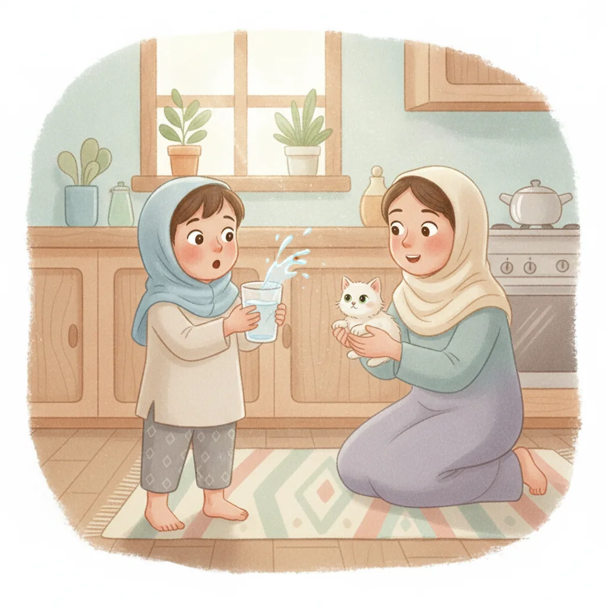
💬Quelques repères simples
Ce qui annule le jeûne, en résumé pour cet âge : manger ou boire volontairement pendant les heures de jeûne. Un oubli n'annule rien, grâce à la miséricorde d'Allah. Il existe d'autres règles plus détaillées (pour la maladie, le voyage) que l'on découvrira en grandissant.
D'après le Précis de Fiqh Malikite (Corentin Pabiot).
✦Et toi ?
Si tu jeûnes et que tu casses ton jeûne par oubli, ne panique jamais : remercie Allah pour Sa miséricorde et continue simplement ta journée.
✏Je m'exerce
1. Que se passe-t-il si je bois de l'eau par pur oubli en jeûnant ?
Réponse : Mon jeûne n'est pas annulé, je continue normalement.
2. Qu'est-ce qui annule vraiment le jeûne ?
Réponse : Manger ou boire volontairement pendant les heures de jeûne.
★À retenir
« Un oubli n'annule pas mon jeûne : Allah connaît mes intentions. »
Semaine 19 · Sîra🕋 Vie du Prophète ﷺ
La première Hégire, vers l'Éthiopieالْهِجْرَةُ الْأُولَى
◎Ce que je vais apprendre
Découvrir pourquoi un groupe de musulmans a quitté La Mecque très tôt.
Situer l'Éthiopie (Abyssinie) comme premier refuge des musulmans persécutés.
Découvrir le roi Négus et son accueil bienveillant.
✎L'histoire de Nour
« Face à la persécution qui s'aggravait à La Mecque, raconte la maîtresse, le Prophète ﷺ a conseillé à un petit groupe de musulmans de partir se réfugier au loin, de l'autre côté de la mer Rouge, dans un royaume chrétien appelé l'Éthiopie, gouverné par un roi juste nommé le Négus. »
« Les Mecquois ont envoyé des messagers pour convaincre le Négus de renvoyer les musulmans. Un compagnon, Ja'far ibn Abî Tâlib, a alors expliqué au roi ce que le Prophète ﷺ leur enseignait : abandonner les idoles, être honnête, protéger les orphelins, respecter les voisins. Le Négus, ému, a refusé de les livrer et leur a offert sa protection. »
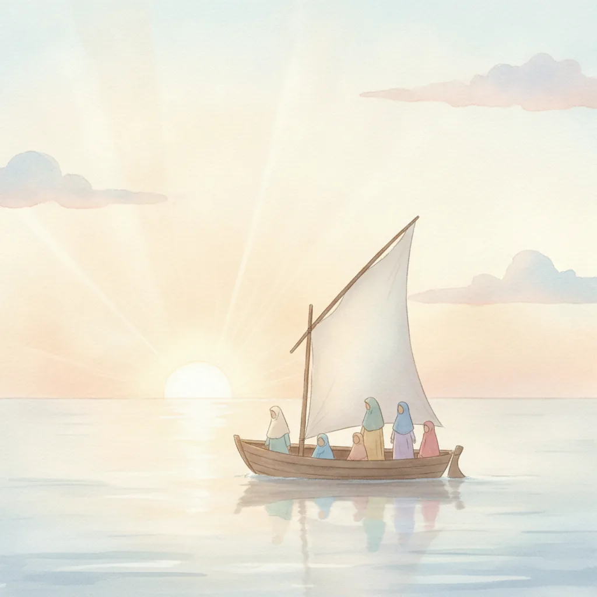
💬Qu'est-ce que cela nous enseigne ?
Cette histoire nous montre que la bonté et la justice peuvent se trouver chez des personnes de religions différentes : le Négus, qui n'était pas musulman, a protégé les musulmans simplement parce qu'il a reconnu la justesse et la sincérité de ce qu'ils lui expliquaient. Cela nous apprend le respect envers les personnes justes, quelle que soit leur religion.
Elle nous montre aussi qu'il est parfois sage de s'éloigner d'un danger plutôt que d'y rester exposé sans nécessité.
✦Et toi ?
Cite une personne que tu connais, de n'importe quelle religion, qui a été juste ou généreuse avec toi. Remercie Allah pour cette rencontre.
✏Je m'exerce
1. Vers quel pays est partie la première Hégire ?
Réponse : L'Éthiopie (Abyssinie).
2. Comment s'appelait le roi qui a accueilli les musulmans ?
Réponse : Le Négus.
3. Qui a expliqué l'islam au Négus ?
Réponse : Ja'far ibn Abî Tâlib.
★À retenir
« La justice et la bonté peuvent se trouver partout : je respecte toute personne juste, quelle que soit sa religion. »
Semaine 20 · Hadith & Adab🤝 Bon comportement
Pardonner et se réconcilierاَلْعَفْو
◎Ce que je vais apprendre
Comprendre la différence entre pardonner et oublier.
Découvrir qu'Allah aime ceux qui pardonnent, même quand ils pourraient se venger.
Apprendre à pardonner sans que ce soit une faiblesse.
✎L'histoire de Nour
Un camarade de classe a accusé Nour, à tort, d'avoir triché à un contrôle, devant toute la classe. Après enquête, la maîtresse a compris que ce n'était pas vrai, et le camarade est venu s'excuser, honteux. Nour hésite : elle pourrait rester distante avec lui pour lui montrer qu'elle est encore blessée.
Sa grand-mère lui rappelle une histoire : « Le Prophète ﷺ, après avoir enduré des années de persécution, quand il est retourné triomphant à La Mecque, a pardonné à presque tous ceux qui l'avaient fait souffrir, alors qu'il aurait pu se venger. » Nour choisit alors d'accepter les excuses de son camarade sincèrement, sans rancune.
« Qu'ils pardonnent et absolvent. N'aimeriez-vous pas qu'Allah vous pardonne ? »
Sourate An-Nûr (24), extrait du verset 22 — trad. M. Hamidullah
💬Qu'est-ce que cela veut dire ?
Ce verset nous rappelle un lien important : si je veux qu'Allah me pardonne mes erreurs, je dois aussi savoir pardonner celles des autres envers moi. Pardonner ne veut pas dire faire comme si rien ne s'était passé, ni accepter d'être maltraité(e) sans rien dire : cela veut dire choisir de ne pas garder de rancune une fois que des excuses sincères ont été présentées.
✦Et toi ?
Pense à une personne à qui tu n'as pas encore vraiment pardonné, même si elle s'est excusée. Essaie cette semaine de tourner sincèrement la page avec elle.
✏Je m'exerce
1. D'après le verset, pourquoi devrions-nous pardonner aux autres ?
Réponse : Parce que nous voulons nous-mêmes qu'Allah nous pardonne.
2. Pardonner veut-il dire accepter d'être maltraité sans rien dire ?
Réponse : Non, cela veut dire ne pas garder de rancune après des excuses sincères.
★À retenir
« Je pardonne sincèrement à qui s'excuse, car je souhaite moi aussi qu'Allah me pardonne. »
Innâ anzalnâhu fî laylatil-qadr. Wa mâ adrâka mâ laylatul-qadr. Laylatul-qadri khayrun min alfi shahr. Tanazzalul-malâ'ikatu war-rûhu fîhâ bi-idhni rabbihim min kulli amr. Salâmun hiya hattâ matla'il-fajr.
« Nous l'avons certes, fait descendre (le Coran) pendant la nuit d'Al-Qadr. Et qui te dira ce qu'est la nuit d'Al-Qadr ? La nuit d'Al-Qadr est meilleure que mille mois. Durant celle-ci descendent les Anges ainsi que l'Esprit, par permission de leur Seigneur pour tout ordre. Elle est paix et salut jusqu'à l'apparition de l'aube. »
Sourate Al-Qadr (97), versets 1 à 5 — trad. M. Hamidullah
Cette sourate parle de la nuit où le Coran a commencé à être révélé au Prophète ﷺ, une nuit précise du mois de Ramadan appelée Laylat al-Qadr, « la Nuit de la Destinée ». Cette nuit est si extraordinaire qu'adorer Allah pendant elle vaut mieux que 1000 mois d'adoration — c'est-à-dire plus de 83 ans !
Les anges eux-mêmes descendent cette nuit-là, et elle est décrite comme une nuit de paix totale, jusqu'au lever de l'aube.
✦3 idées essentielles
1
Une seule nuit peut valoir mieux que 1000 mois d'adoration : la générosité d'Allah dépasse tout ce qu'on imagine.
2
Cette nuit se situe dans les dix dernières nuits du Ramadan : c'est un moment à ne pas laisser passer sans y penser.
3
Laylat al-Qadr est décrite comme une nuit de paix (salâm) : je peux profiter du Ramadan pour apaiser mon cœur et me réconcilier avec les autres.
Semaine 22 · Aqîda🕌 Croyance
Le Jour Dernier : la balance de mes actionsالْمِيزَان
◎Ce que je vais apprendre
Découvrir l'image de la balance (mîzân) au Jour Dernier.
Comprendre que même les petites bonnes actions ont du poids.
Relier cette croyance à une motivation positive, pas à la peur.
✎L'histoire de Nour
En classe de sciences, Nour a appris à utiliser une balance à deux plateaux. Le soir, elle repense à la leçon d'Aqîda de la semaine dernière sur le Jour Dernier et demande à son père : « Tu m'as dit qu'Allah voit toutes mes actions. Mais comment fait-Il pour juger si j'ai été plutôt bonne ou plutôt mauvaise ? »
« Bonne question, dit son père. Le Jour Dernier, on parle d'une balance, le mîzân, où seront pesées nos bonnes et nos mauvaises actions. Ce n'est pas juste une image : c'est une réalité que nous croyons sans en connaître tous les détails. Ce qui compte pour nous aujourd'hui, c'est de faire pencher le plateau du bien autant que possible, à chaque instant de notre vie. »
« Ceux dont la balance sera lourde seront les gagnants. »
Sourate Al-A'râf (7), extrait du verset 8 — trad. M. Hamidullah
💬Qu'est-ce que cela veut dire ?
Le mîzân est la balance qui pèsera nos actions au Jour Dernier. Ceux dont le plateau des bonnes actions sera lourd réussiront (al-muflihûn). Cette croyance n'est pas là pour nous faire peur en permanence, mais pour nous motiver positivement : chaque sourire, chaque aide apportée, chaque parole gentille a un poids réel, même si elle paraît minuscule sur le moment.
💡Le savais-tu ?
Le Prophète ﷺ a enseigné qu'une phrase toute simple, « Subhânallâhi wa bihamdihi » (Gloire et louange à Allah), est légère à dire mais très lourde sur la balance des bonnes actions.
✏Je m'exerce
1. Comment s'appelle la balance qui pèsera nos actions ?
Réponse : Le mîzân.
2. Qui « réussit » d'après le verset ?
Réponse : Ceux dont la balance des bonnes actions est lourde.
★À retenir
« Chaque petite bonne action a du poids sur ma balance : rien de bon n'est jamais perdu auprès d'Allah. »
✎Vocabulaire
Mîzân : la balance des actions.مِيزَان
Muflihûn : ceux qui réussissent.مُفْلِحُون
Semaine 23 · Fiqh💧 La pratique
Ma checklist d'autonomie — prière et jeûneاِسْتِقْلَالِيَّتِي
◎Ce que je vais apprendre
Faire le bilan de tout ce que j'ai appris cette année en fiqh.
Vérifier que je peux prier et pratiquer les gestes essentiels sans aide.
Me fixer un petit objectif pour l'année prochaine.
✎L'histoire de Nour
En cette fin d'année, la maîtresse propose à chaque élève de remplir sa propre « checklist d'autonomie ». Nour prend son carnet et coche, une à une : je sais faire le wudû seule ✓, je sais prier une prière complète sans aide ✓, je sais reconnaître ce qui annule le jeûne ✓, je connais les bases du halal et du harâm ✓.
« Regarde tout ce chemin parcouru depuis l'an dernier ! » lui dit sa maîtresse avec fierté. Nour sourit : elle se sent vraiment plus grande et plus responsable qu'au début de l'année.
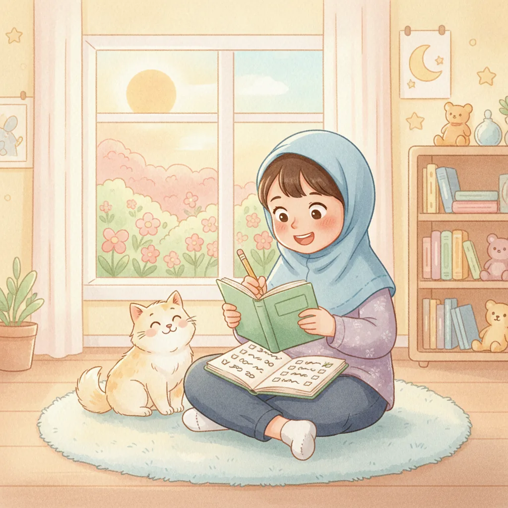
💬Ma checklist de l'année
1Je sais accomplir seul(e) une prière complète, du takbîr au taslîm.
2Je connais des exemples simples de halal et de harâm dans ma vie de tous les jours.
3Je comprends ce qui annule vraiment le jeûne, et ce qui est pardonné (l'oubli).
4J'ai essayé de jeûner au moins une journée complète cette année, ou je m'y entraîne progressivement.
✦Et toi ?
Reprends chaque point de la checklist ci-dessus et coche ce que tu sais déjà faire seul(e). Pour les autres, fixe-toi un petit objectif pour l'année prochaine.
✏Je m'exerce
1. Cite un geste que tu sais maintenant faire seul(e) que tu ne savais peut-être pas au début de l'année.
Réponse : Réponse libre — par exemple prier une prière complète sans aide.
★À retenir
« Cette année, je suis devenu(e) plus autonome dans ma pratique : je continue à grandir, un pas après l'autre. »
Semaine 24 · Sîra🕋 Vie du Prophète ﷺ
L'Hégire vers Médineالْهِجْرَةُ إِلَى الْمَدِينَة
◎Ce que je vais apprendre
Comprendre pourquoi le Prophète ﷺ a fini par quitter La Mecque pour Médine.
Découvrir l'épisode de la grotte de Thawr.
Comprendre l'importance de cette Hégire dans l'histoire de l'islam.
✎L'histoire de Nour
« Après des années de persécution toujours plus dures, raconte la maîtresse, les chefs de La Mecque ont même comploté pour tuer le Prophète ﷺ. Allah lui a alors ordonné de partir vers la ville de Yathrib, plus tard appelée Médine, où des habitants l'avaient invité à venir vivre en paix. »
« Pour échapper à ses poursuivants, le Prophète ﷺ et son fidèle ami Abû Bakr se sont cachés trois jours dans la grotte de Thawr. Une araignée aurait tissé sa toile à l'entrée, et des poursuivants, la voyant intacte, ont pensé que personne ne pouvait être entré depuis longtemps. » « C'est incroyable ! » s'exclame Nour. « Oui, dit la maîtresse. Cette Hégire vers Médine est si importante qu'elle marque le début du calendrier musulman. »
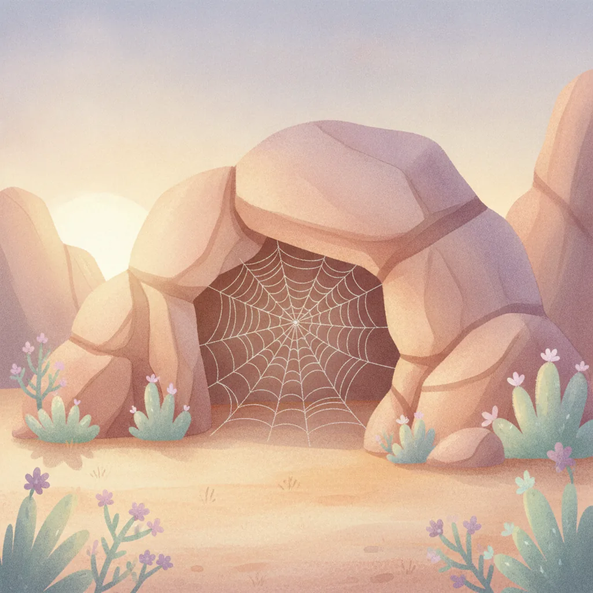
💬Qu'est-ce que cela nous enseigne ?
Cet épisode nous montre qu'Allah peut protéger Ses serviteurs par les moyens les plus discrets et inattendus — une simple toile d'araignée. Il nous enseigne aussi la confiance totale en Allah (tawakkul) : même dans le danger, le Prophète ﷺ est resté calme, disant à Abû Bakr : « Ne t'attriste pas, Allah est avec nous. »
L'Hégire marque un nouveau départ : à Médine, le Prophète ﷺ a pu bâtir la première communauté musulmane organisée, avec une mosquée et des règles de vie ensemble.
✦Et toi ?
Dans un moment où tu as peur ou où tu te sens en danger, souviens-toi de la phrase du Prophète ﷺ : « Ne t'attriste pas, Allah est avec nous », et dis-la toi-même.
✏Je m'exerce
1. Comment s'appelait la ville qui allait devenir Médine avant l'arrivée du Prophète ﷺ ?
Réponse : Yathrib.
2. Dans quelle grotte le Prophète ﷺ et Abû Bakr se sont-ils cachés ?
Réponse : La grotte de Thawr.
3. Que marque le début du calendrier musulman ?
Réponse : L'Hégire (la migration) vers Médine.
★À retenir
« Ne t'attriste pas, Allah est avec nous » — je garde confiance en Allah, même dans les moments difficiles.
Faire le bilan de toutes les bonnes qualités travaillées cette année.
Comprendre qu'être bon(ne) n'est jamais « fini » : c'est un chemin continu.
Célébrer les 5 nouvelles sourates apprises cette année.
✎L'histoire de Nour
C'est la dernière semaine de l'année scolaire. Nour ouvre son Passeport des Sourates, désormais complet des 5 nouvelles pages de cette année : Ad-Duhâ, Ash-Sharh, At-Tîn, Al-Humazah, Al-Qadr. Elle repense aussi à tout ce qu'elle a appris : se réconcilier vite, choisir de bons amis, gérer son temps d'écran, pardonner sincèrement.
« Est-ce que je suis devenue quelqu'un de bien, maintenant ? » demande-t-elle à sa maîtresse en riant à moitié. « Devenir quelqu'un de bien, ce n'est jamais totalement "fini", répond sa maîtresse en souriant. C'est un chemin qui continue toute la vie. Mais regarde tout ce que tu as déjà accompli cette année : tu as de quoi être fière. »
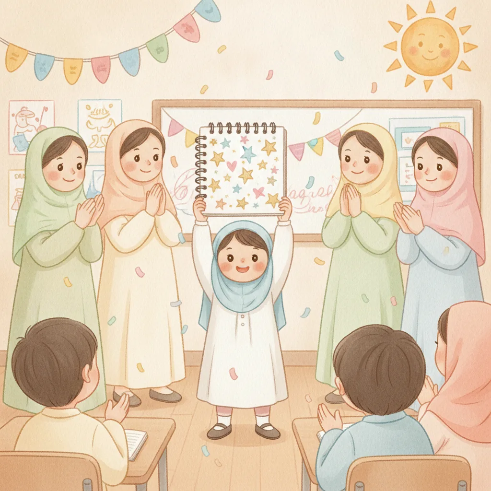
❝Un hadith à retenir
« Le croyant qui se mêle aux gens et supporte leurs torts avec patience vaut mieux que celui qui ne se mêle pas aux gens et ne supporte pas leurs torts. »
Rapporté par At-Tirmidhî et Ibn Mâjah.
💬Qu'est-ce que cela veut dire ?
Ce hadith de clôture résume bien l'année : la bonté ne se pratique pas seul(e) dans son coin, mais au contact des autres — camarades, famille, enseignants — même quand ce n'est pas toujours facile. Se réconcilier, choisir de bons amis, pardonner, faire attention à ses paroles : tout ce qu'on a appris cette année se vit avec les autres, pas loin d'eux.
✦Mon carnet de bonté — activité de clôture
Sur une feuille, dessine ou écris 5 bonnes qualités que tu as travaillées cette année (une par sourate apprise, par exemple). Garde ce carnet pour te souvenir, l'an prochain, du chemin déjà parcouru.
2. D'après le hadith de clôture, où se pratique la bonté ?
Réponse : Au contact des autres, pas isolé(e).
★À retenir
« Devenir quelqu'un de bien est un chemin qui continue toute la vie : cette année n'était qu'une étape. »
🎓 Grand Quiz de fin d'année
Réponds à toutes les questions pour vérifier ce que tu as appris cette année ! À la fin, imprime ton récapitulatif pour le montrer à ta maîtresse ou ton maître.
Détectée automatiquement, modifiable
Semestre :
Pré-sélectionné selon la date, modifiable
Score : 0 / 15
Vrai ou faux
1. Le jeûne du Ramadan devient obligatoire à partir de la puberté.
Vrai ou faux
2. Si on boit de l'eau par pur oubli pendant le jeûne, le jeûne est annulé.
Vrai ou faux
3. Pardonner veut dire accepter d'être maltraité sans jamais rien dire.
Choix unique
4. Comment s'appelait le roi qui a accueilli les premiers musulmans partis en Éthiopie ?
Choix unique
5. Que répétait Bilâl pendant sa torture pour rester ferme dans sa foi ?
Choix unique
6. Dans quelle grotte le Prophète ﷺ et Abû Bakr se sont-ils cachés pendant l'Hégire vers Médine ?
Choix unique
7. Comment s'appelle la balance qui pèsera nos actions le Jour Dernier ?
Choix multiple
8. Coche tout ce qui est halal (permis) parmi ces comportements :
Choix multiple
9. Coche toutes les sourates apprises cette année :
Mise en situation
Nour trouve un bonbon à la cantine mais n'est pas sûr(e) qu'il contienne de la gélatine animale.
10. Que doit faire Nour face à ce doute (shubuha) ?
Mise en situation
Un camarade accuse Nour à tort de tricherie devant toute la classe, puis vient s'excuser sincèrement.
11. Que doit faire Nour, en pensant au pardon du Prophète ﷺ ?
Relie les éléments
12. Relie chaque terme à sa définition :
Sawm
Tawba
Shirk
Tawhîd
Croire qu'Allah seul mérite d'être adoré
Le jeûne
Associer autre chose à Allah dans l'adoration
Le repentir sincère
Touche un mot à gauche, puis son correspondant à droite.
Le récapitulatif (nom, score, date) peut être imprimé ou enregistré en PDF pour ton enseignant(e).